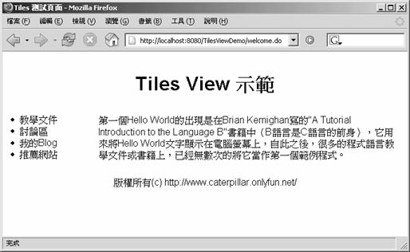

|
|
Tiles
是一個模版引擎（Template
Engine），它可以讓網頁的配置（Layout）（像是使用<table>標籤）與實際要呈現資料的內容分離，Tiles提供一個版面管
理機制，您可以在Spring的View層使用Tiles來管理網頁的版面配置，這有兩個基本動作必須設定，一是設定
org.springframework.web.servlet.view.tiles.TilesView，二是設定
org.springframework.web.servlet.view.tiles.TilesConfigurer，例如：
<?xml version="1.0" encoding="UTF-8"?> 注意到設定TilesView之後，您傳回的ModelAndView中設定的"view"名稱並不是指向真正的資源URL位置，而是在Tiles定義檔 中所定義的名稱，以上面的設定為例，ParameterizableViewController的"viewName"設定為"welcome"，則它 會到Tiles設定檔中找相關的"welcome"設定，Tiles定義檔的讀取位置可以由TilesConfigurer的"definitions" 屬性來設定，假設您的Tiles定義檔是這麼設定的：
<?xml version="1.0" encoding="UTF-8" ?> 在定義檔中，首先定義一個".myLayout"，名稱開頭有個逗點在命名慣例上通常表示這是一個版面定義，而不是一個真正要呈現畫面資料的定義， "welcome"定義可以繼承".myLayout"的定義，並針對該頁面的需求重新定義了"title"項目，在傳回view的名稱若為 "welcome"時，實際上會讀取的是以上的定義檔中"welcome"中的設定。 假設您的myLaout.jsp是這麼撰寫的，當中使用表格來設計版面的配置：
<%@page contentType="text/html"%> header、menu、body、footer等JSP頁面簡單的如下撰寫：
<%@page pageEncoding="UTF-8"%>
<%@page pageEncoding="UTF-8"%>
<%@page pageEncoding="UTF-8"%><br> 要使用Tiles的話，您必須要有commons-beanutils.jar、commons-logging.jar、commons- collections.jar、commons-digester.jar、struts.jar四個.jar檔案，這些.jar檔案都可以在 Spring下載檔案中lib目錄的jakarta-commons目錄及struts目錄下找到。 按照以上的設定，如果您連接到/welcome.do，則會取得Tiles定義檔中的welcome的定義，結果是顯示以下的內容：  如果您有一些資料是在每一個頁面（例如在Header處）都要出現的，您可以在header.jsp中這麼撰寫： <%@page pageEncoding="UTF-8"%>
<center><h1>Tiles View 示範<h1> </center> <H1>${someData}</H1> 為了要能顯示${someData}資料，則您必須在每一個Controller中設定屬性值，例如： ...
Map model = new HashMap(); ... model.put("someData", data); ... 接著在ModelAndView傳回時，設定model物件，每一個Controller中都必須加入這些描述，才會在每一個有Tiles設定的頁面都能顯示${someData}。 不過還有個更簡單的方法，您可以繼承 org.springframework.web.servlet.view.tiles.ComponentControllerSupport這個類 別，它繼承自Tiles的ControllerSupport類別，您可以重新定義ComponentControllerSupport的 doPerform()方法，例如： ...
public class HeaderControllerSupport extends ComponentControllerSupport { protected void doPerform( ComponentContext componentContext, HttpServletRequest request, HttpServletResponse response) throws Exception { ApplicationContext context = getApplicationContext(); SomeData someData = (SomeData) context.getBean("someData"); componentContext.putAttribute("someData", someData); } } 在您的Tiles定義檔中可以這麼設定，就可以每一個頁面都取得someData的值了： <?xml version="1.0" encoding="UTF-8" ?>
<!DOCTYPE tiles-definitions PUBLIC "-//Apache Software Foundation//DTD Tiles Configuration 1.1//EN" "http://jakarta.apache.org/struts/dtds/tiles-config_1_1.dtd"> <tiles-definitions> <definition name=".header" path="/WEB-INF/jsp/tiles/header.jsp" controllerClass="onlyfun.caterpillar. → HeaderControllerSupport"/> <definition name=".myLayout" path="/WEB-INF/jsp/tiles/myLayout.jsp"> <put name="title" value="Sample Page Title"/> <put name="header" value=".header"/> <put name="menu" value="/WEB-INF/jsp/tiles/menu.jsp"/> <put name="footer" value="/WEB-INF/jsp/tiles/footer.jsp"/> <put name="body" value="/WEB-INF/jsp/tiles/body.jsp" /> </definition> <definition name="welcome" extends=".myLayout"> <put name="title" value="Tiles 測試頁面"/> </definition> </tiles-definitions> |